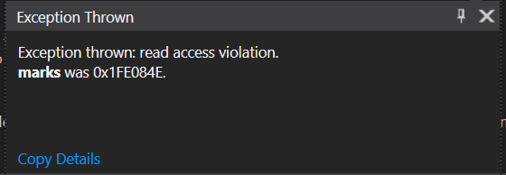

Consider having to create a program that maintains marks for 30 students (marks have values 0-6) and allowing the user to query a mark and change the mark for a student
With the primitive data types that we discussed up until now, how would you solve it?
You would probably have 30 variables, each for a student's mark and whenever the user queries/updates a mark, you would have an if/switch statement with 30 possible branches
This is an inefficient, unreadable, error-prone, and fortunately a solution we do not have to create
Instead, we will learn about arrays, which are an aggregate data type that will allow us to easily store, update and query the students' marks
An array is an aggregate data type, which represents a finite list of elements from the same type. It allows to query/update every element by its index
Examples
int main() {
int arr[5]; // Declare an array of 5 elements of type int
double numsArr[3] = { 0.05, 1.75, 100.22 }; // Declare and initialize an array of 3 doubles with their values
int arr2[5] = { 5, 3, 8 } // Same as int arr[2] = { 5, 3, 8, 0, 0 }
arr2[0] = 1; // arr2 now contains values { 1, 3, 8, 0, 0 }
cout << arr[2]; // Prints 8
return 0;
}
The cin operator is not defined for arrays. The cout operator prints the memory address of an array
However, they can be used for specific array elements, for example arr[3], with the well-known behaviour
The physical representation of an array in memory is a continuous block of memory
int a[5] = {1, 2, 3};
Array indexes start from 0!
Now that we know of these arrays, let's solve our problem
Have in mind that this is quite a primitive solution. The constants representing the command numbers could be extracted into an enum
Also, we don't perform any validations for the entered indices/marks whatsoever
Wonder what could go wrong? Try printing student 100000's mark
This is called an exception. It is out of the course's scope, but remember that your code must never throw exceptions in such a manner, as the program has to terminate.
That was it :)